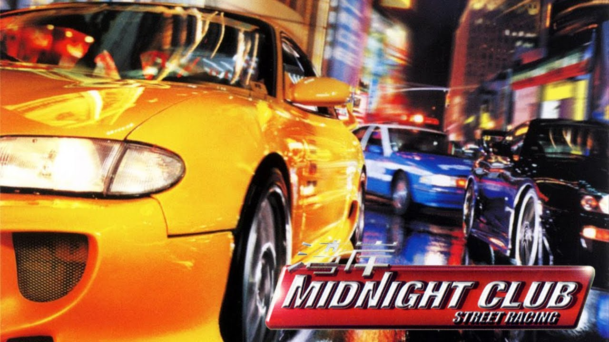
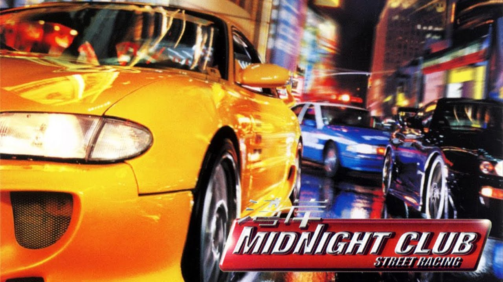

Midnight Club 3: DUB Edition é um jogo eletrônico de corrida desenvolvido pela Rockstar San Diego e publicado pela Rockstar Games. Foi lançado em abril de 2005 para PlayStation 2 e Xbox. Um porte para PlayStation Portable, desenvolvido pela Rockstar Leeds, foi lançado em junho de 2005. No ano seguinte, um relançamento atualizado do jogo, intitulado Midnight Club 3: DUB Edition Remix, foi lançado para PlayStation 2 e Xbox. É o terceiro título da série Midnight Club e a sequência de Midnight Club II (2003).